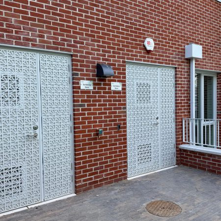
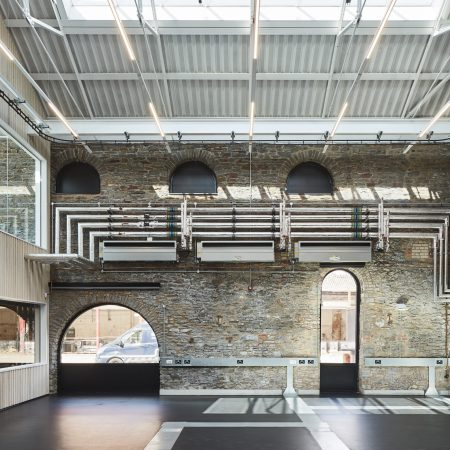
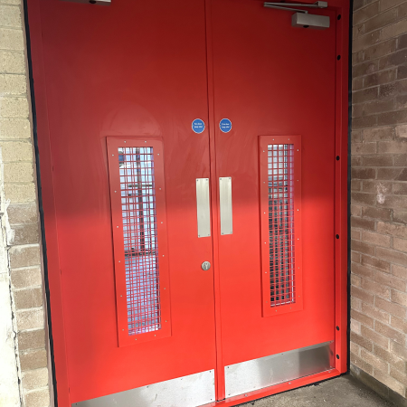
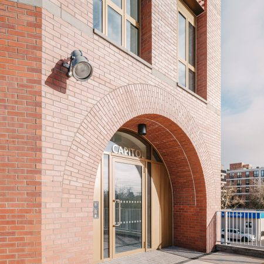
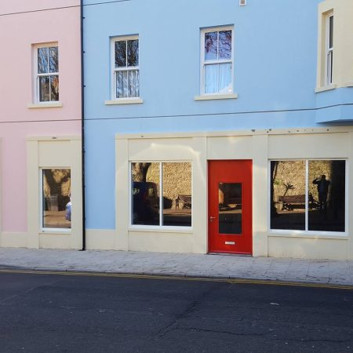
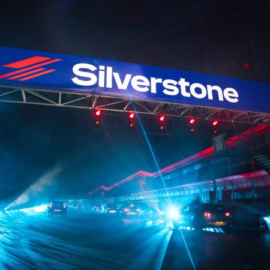

From race circuits to research campuses — a selection of projects where our doors deliver protection, performance and peace of mind.

Bespoke LPS 1175 SR2-rated steel and glazed doorsets, combining enhanced security performance with a custom architectural perforated panel design.

The TQEC Research Hub forms the first phase of the University of Bristol's wider innovation campus, revitalising a post-industrial site near Bristol Temple Meads.

A project that underscores Design & Supply's expertise in delivering robust security solutions for high-traffic environments.

An extensive upgrade to external doors, screens and curtain walling for this canal-side East London development.

A prestigious residential complex in scenic Tenby sought to enhance security while maintaining an aesthetic echoing its coastal charm — delivered with steel faced SG1 and SR2 security-rated doors.

The home of British motorsport required a security upgrade to protect its valuable assets and ensure the safety of all personnel.
From survey and CAD design to fabrication and nationwide installation — let's talk about your requirements.